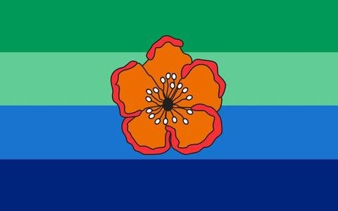

Getting Here
PMA flights from Koror on Tuesdays and Saturdays, and the State speedboat four days a week.
Flight and boat schedules
Palau's southernmost island — eight square kilometres of limestone coast, wartime relics and living tradition, cared for by a community of 114.
Explore NowNestled at the southern tip of Palau's archipelago, Angaur is a world apart — a quiet island of just eight square kilometres where limestone cliffs meet turquoise waters, and ancient traditions thrive undisturbed.
8 km²
Land Area
114
Residents
82°F
Climate


0
Identified
0
Registered
0
Restored
The heritage register is being updated. Please check back soon.
The Giant That Fell
Long ago, a boy was born on Angaur — ordinary at first, but consumed by an insatiable hunger. As he grew, so did his greed. He devoured everything the island could offer, outgrowing every house, every boundary.
The legend endures as a reminder: unchecked desire destroys not just the one who carries it, but the entire community.

Designed by Leon Gulibert in 2000, the flag places the orange Kelau flower at its centre — a symbol of the customs and ceremonies practised only in Angaur.
 Buddhist MemorialMemorial
Buddhist MemorialMemorial Virgin Mary StatueMemorial
Virgin Mary StatueMemorial BlowholesNatural
BlowholesNatural Shinto ShrineHeritage
Shinto ShrineHeritageGovernor's updates · september
PMA flights from Koror on Tuesdays and Saturdays, and the State speedboat four days a week.
Flight and boat schedulesPermit fee required for site visits.
Designated evacuation centres for tsunamis, typhoons, and flooding.
The gallery is being updated. Please check back soon.

Ready when you are
Reach out to the Angaur State Government to arrange your visit. We're here to help.